홈 카드의 상태 줄 다섯 가지(보내기 전 · 호감 보냄 · 편지 보냄 · 둘 다 · 서로 연결됨)는 이미 들어가 있어요. 남은 건 보낸 뒤 색이에요. 지금은 보냄이 흰 바탕 회색이고 연결만 파랑인데, 팀 링크는 상태마다 다른 색 알약이에요.
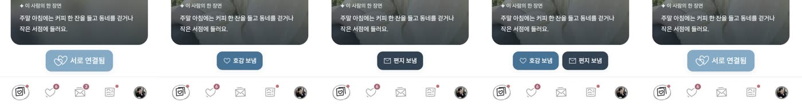
서로 연결됨은 옅은 파랑 + 겹친 하트, 호감 보냄은 중간 파랑, 편지 보냄은 남색, 둘 다면 알약 두 개예요. 보내기 전 버튼은 없고(프로필에서 보냄), 보낸 결과만 카드 아래에 보여요.
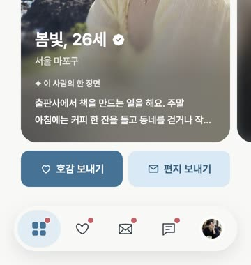
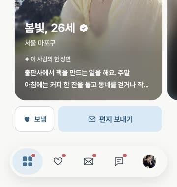
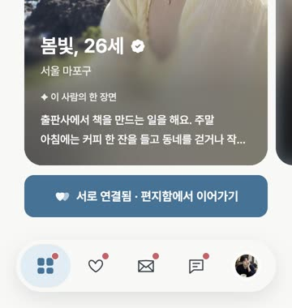
끝난 일은 "보냄"으로 작게 접히고 남은 행동이 넓어져요. 행동은 호감 = 주요(파랑), 편지 = 보조(연한 하늘)예요.
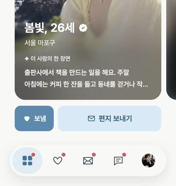
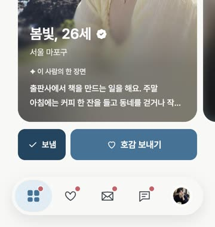
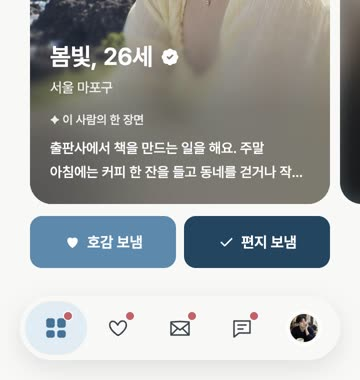
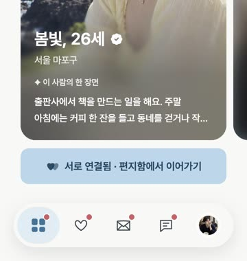
결과가 한눈에 보이지만 보냄과 남은 행동이 둘 다 진한 색이라 무엇을 눌러야 하는지 흐려져요(편지 보냄 칸: 남색 보냄 옆에 파랑 호감 보내기).
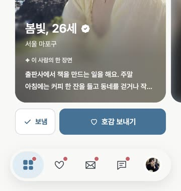
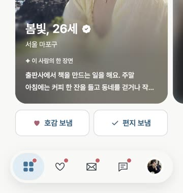
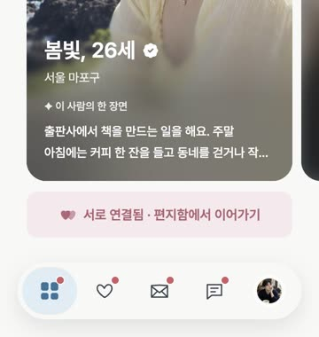
파랑은 "누를 것"에만 남기고, 끝난 일은 회색, 서로 이어진 순간만 장미로 띄워요. 마음함 "서로 호감" · 편지함 "서로 연결됨"의 장미와 같은 말이 돼요.
카드 안이면 보냄이 사진 위 회색 유리가 돼요. 지금 기본은 카드 아래예요(시연 도구에서 바꿀 수 있어요).